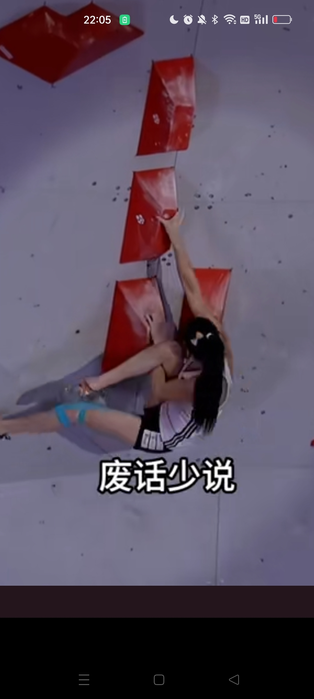
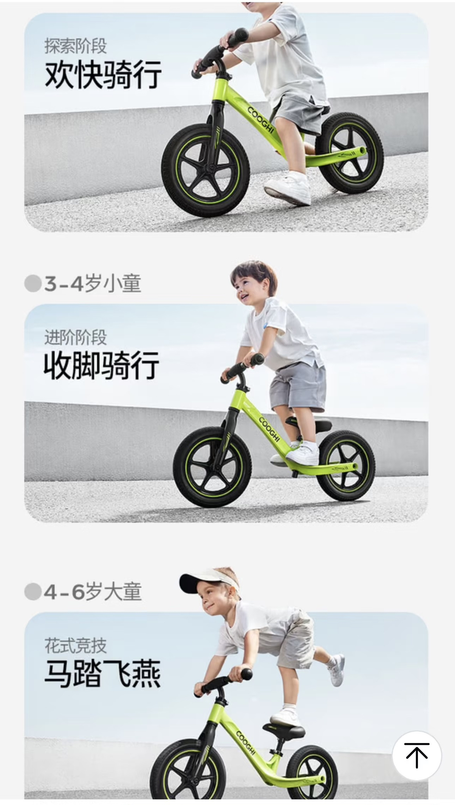
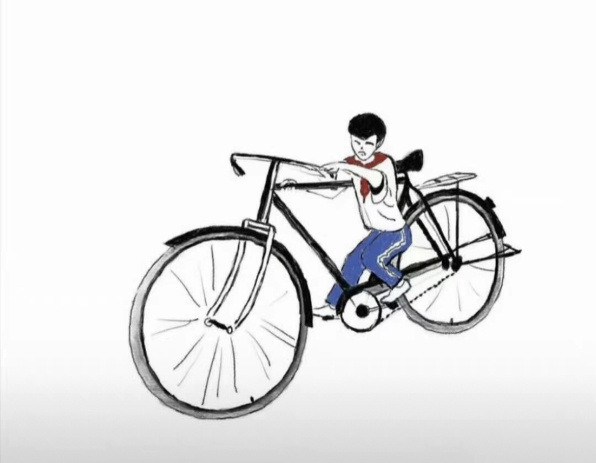
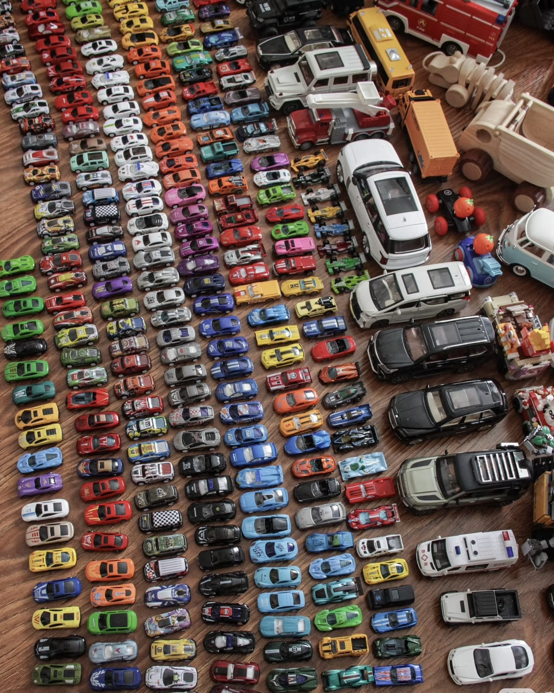
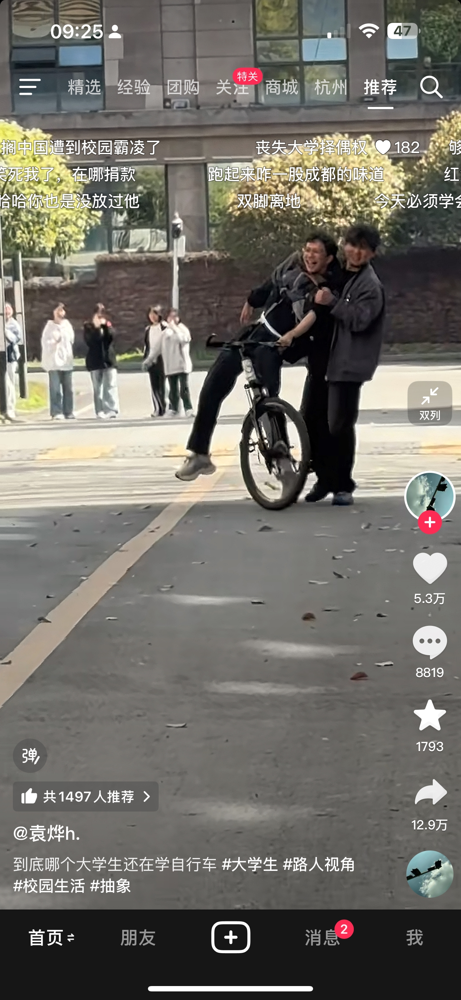
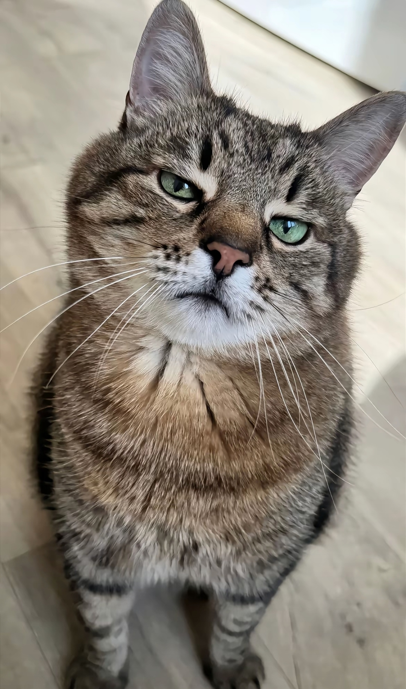
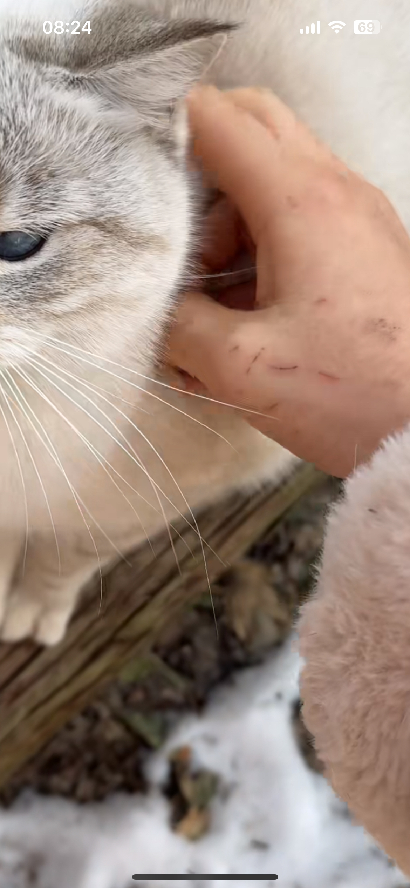

你们有没有觉得，她现在的状态有点像雪莉，发色也好像[流泪][流泪][流泪][流泪]一定要看好她，没让她出事了
我说句实话方大同走了之后她抑郁症复发我都怕她想不开哪天就上热搜了不在了[泪奔]
为啥不让播了，就是东西太好太实用了[看]
一看见阿泽就想起韩国的棋手哈哈哈哈哈
善宇妈妈的衣服都会配色了，不再是那两件旧衣服了，比豹纹女士的显年轻[阴险]
你们知道这个人这一下子给我的震惊有多大吗？[憨笑] 
这些人跟蜘蛛有什么区别[愉快][愉快]
如果出成物理题[宕机]
太牛了，而且膝盖受伤那位还选择不同的解法还成功了，真是对体力与脑力的双重考验，这项运动和女运动鞋们真的好有魅力
姐姐的解说真的很好，刷到你的视频之后也刷过别人的，但还是喜欢你的，因为你不会解说时突然说：来，我们欣赏一下这个运动员的脸[泣不成声] 很喜欢你对运动员们纯粹的欣赏和赞美
不是 手怎么握住的 感觉根本没有着力点啊
安欣找了一辈子也没找出高启强的保护伞是谁[看]
怎么选到这种女主的呀[泣不成声]娃娃脸的同时，气场，娇媚，眼神气质，还有脑子！！！都好绝！
女主演技真不错，确实感觉仪态气质真的很好，尤其是特别端庄淡定，而且真的有一种让人惧怕的气质[流泪]，就那种不怒自威，威严的感觉[流泪]
我好喜欢这个女演员，明明娃娃脸，确娇魅的很
“我国非洲南部”这句话害我脑子宕机3秒[绝望的凝视][绝望的凝视]
原来真的有这么纯真没有利益的友谊[玫瑰][玫瑰][玫瑰]
那个男的算的很精明，要不是没计算熊的食量，没人能发现
熊可是吃活的 不会先咬死[微笑]
孩子该多绝望啊 他死前承受了什么[快哭了]
这马踏飞燕竟然是说明书上的标准动作[发呆] 
以前我是这样骑的 
生之前也没告诉我，养儿子得买这么多车啊[笑哭][笑哭][笑哭][笑哭] 
吃的什么奶劲真大。
屎尿都控制不住的年纪，竟然把平衡车控制住了[捂脸]
我家孩子胳膊摔骨折了，刚从医院带着石膏胳膊吊着绷带，回到家后，自己进屋一只手骑着平衡车出来了，我和他爸爸吓傻了
上一个大学生学自行车[泪奔] 
宝宝，你这么酷[赞] 人家大哥哥却很苦哇[看]
我女儿永远也做不了这个动作，不是她不行，而是她刚起步，她婆婆，奶奶，爷爷就会让她慢点骑，别摔着，小心人，看着路，等等等等[快哭了]
没吃饭吗
哦，然后呢[微笑][OK] 
被抓的吗[发呆] 
还没我家的乖巧可爱[微笑]
这个给我呗！[泣不成声]

Read more: